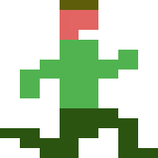

[ About | Controls | Setup | Differences | Source | Acknowledgements]
About
Pitfall! is a platformer originally released in 1982 for the Atari 2600. It dares the player to step into the boots of Pitfall Harry, an adventurer searching for 32 treasures hidden in a perilous jungle maze. To succeed before time runs out, the player must master the underground network of shortcut tunnels.
Press the Play button below to launch a browser port of Pitfall!.
Controls
The browser port supports input from these devices:
-
Keyboard
- Run and climb: Arrow keys or the WASD keys.
- Jump: Any other key. Hold jump while running to hop across crocodile pits.
-
Gamepad
- Run and climb: D-pad or analog stick.
- Jump: Any other button. Hold jump while running to hop across crocodile pits.
-
Touchscreen
- Run: Hold down the left or right side of the screen to run in those directions.
- Jump: While holding down the right side of the screen to run, tap the left side of the screen, or vice versa. Hold jump while running to hop across crocodile pits.
- Climb down: Run onto a ladder shaft, then run in the direction you were facing.
- Climb up: Stop at the base of a ladder, then run in the direction you are facing. Or jump onto a ladder, then run in the direction you were facing.
Setup
The browser port introduces Easy, Normal, and Hard modes to accommodate a range of player skill levels:
- Easy Mode: Players start with five lives. Arrows guide them through the maze, visible perimeters highlight shifting pits, and the HUD displays the scene index and the number of treasures collected.
- Normal Mode: Players start with four lives. Shifting pit perimeters remain visible, and the HUD displays the scene index and treasure count.
- Hard Mode: Closest to the original game, this mode starts players with three lives, removes visible perimeters for shifting pits, and excludes any additional HUD metrics.
The port retains the map from the original. While the optimal route spans leftward across the jungle, Easy mode guides the player rightward along a path traversable within the time limit. Its route is consistent with the rightward scrolling convention established by platformers released after Pitfall!.
Differences
The browser port is not an emulation of the Atari 2600 version. Rather, it was developed in TypeScript through careful observation of gameplay and in-depth analysis of the original’s 6507 assembly language source code. While it faithfully preserves the sound effects and graphics of the original, it introduces several notable changes:
- Side-Scrolling: Unlike the original, where the scene changes when the player crosses a screen boundary, the port is a side-scroller. Any partially visible adjacent screen will transition to a different scene when the player drops into or climbs out of a tunnel because the screen boundaries of tunnels warp to scenes three screens away rather than one screen away. Screen widths were also narrowed to remove the left and right margins the player cannot enter.
- Midair Control: Instead of a fixed trajectory, the player can now change direction midair. To release a vine without falling in a pit, the player must hold left or right, as opposed to tapping down.
- Croc Hopping: Unlike the original, holding jump causes the player to hop. Doing so while running is an easy way to get across a crocodile pit. The duration crocodile mouths remain closed was also extended.
- Obstacle Directions: Logs now roll in the direction the player entered the scene, their hitboxes were narrowed, and they appear and disappear at scene boundaries. Additionally, crocs and cobras face the direction the player entered the scene.
- Scorpion Behavior: Instead of targeting the player’s position, the scorpion moves toward a spot beyond the player. When the player is above ground, the scorpion wanders without tracking the player.
- Respawning Location: Respawn position now depends on the direction the player was facing and proximity to scene boundaries when killed, rather than always placing the player on the left side of the screen.
- Ladder Behavior: Stepping onto a ladder shaft now causes the player to cling to the ladder rather than falling into the tunnel. From below, players can jump onto a ladder, and the controls for getting on and off ladders are smoother.
- Vine Adjustment: The vine pivot point was shifted two pixels right to better center it over a pit.
- Difficulty Modes: The port introduces Easy, Normal, and Hard modes to accommodate a range of player skill levels. Easy and Normal modes provide features unavailable in the original, such as arrows that guide the player through the maze, a visible perimeter around shifting pits, and additional HUD metrics.
- Animation Enhancements: The port refines animations that were originally limited by Atari 2600 hardware, such as respawning from behind tree leaves and sliding into a croc’s mouth.
Source
The source is available here.
Acknowledgements
The original Pitfall! was designed and programmed by David Crane and published by Activision.